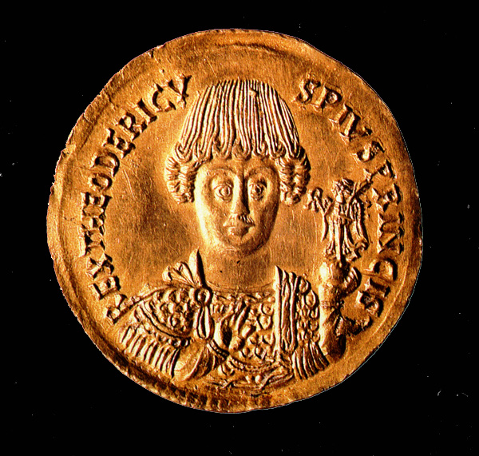
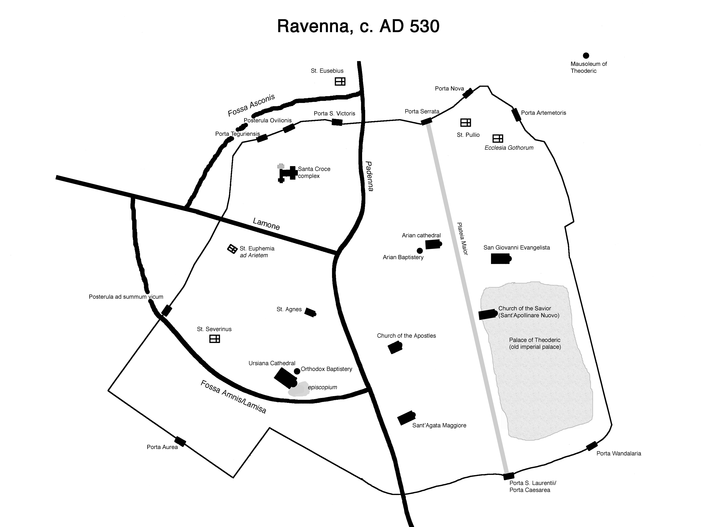
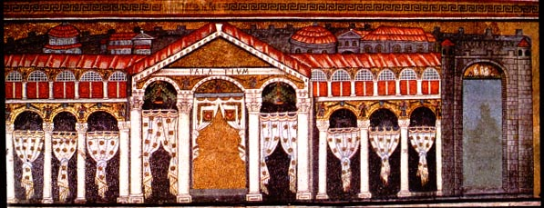
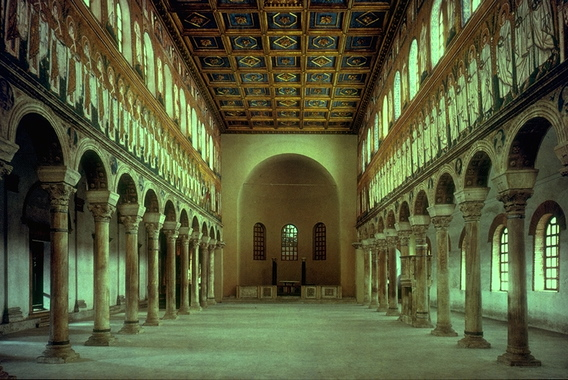
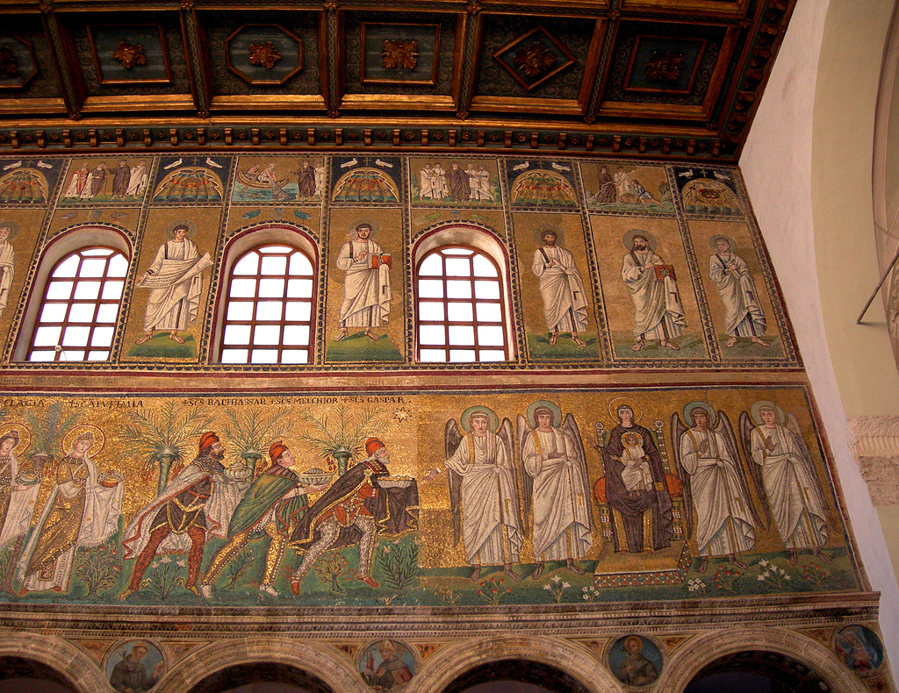
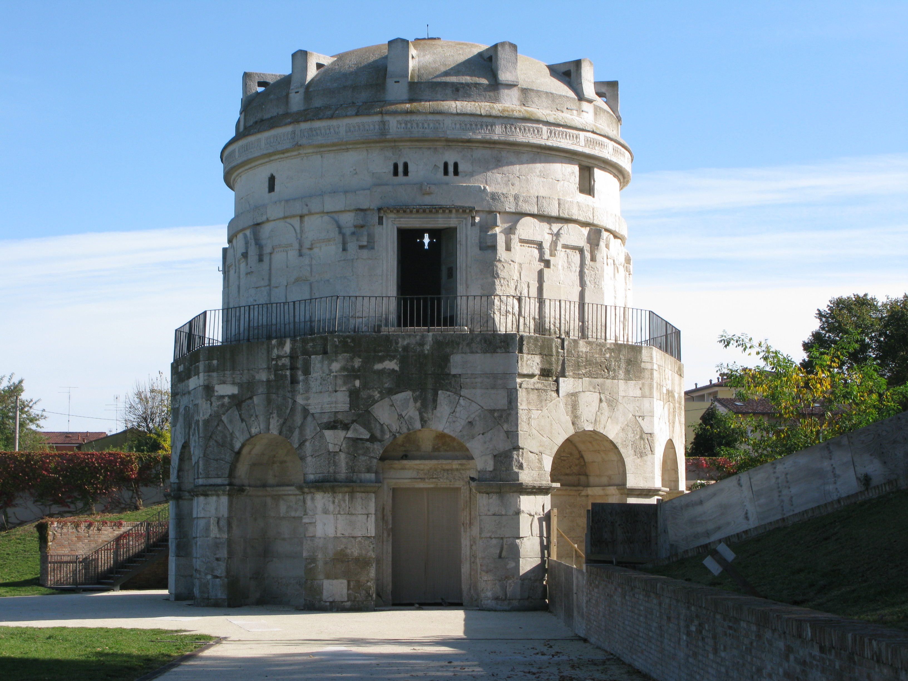
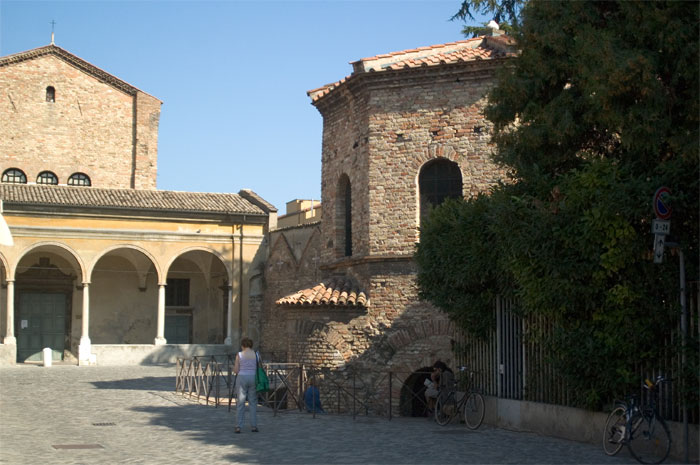
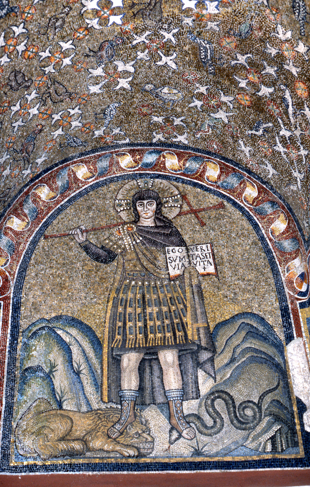
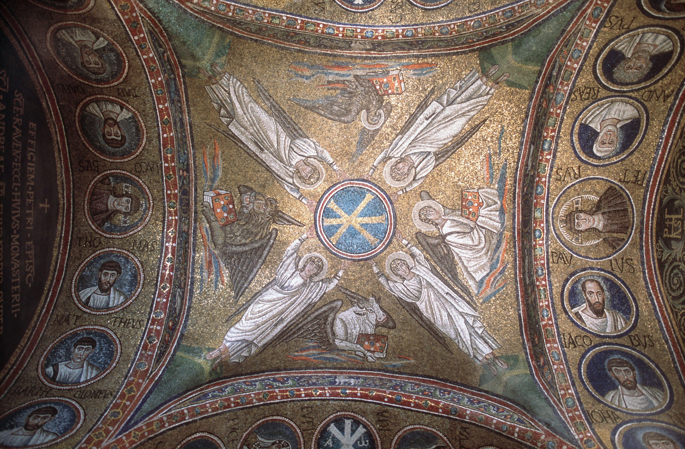

Ravenna and the
Ostrogothic Kingdom (489-540)

(Commemorative gold medallion celebrating Theoderic's 30th
anniversary as king, known as the Senigallia Medallion)
|
The Ostrogoths formed as a group after the
collapse of
Attila's Hunnic empire in the 460's
and 470's. Germanic peoples living
in the Balkans came under the sway of various leaders, including one
Thiudimir. In 461, Thiudimir's son
Theoderic was sent to Constantinople, a hostage for his father's good
behavior
as an ally of the Eastern Empire. Theoderic
lived in the capital city until he was 18; he
returned to his
people in 471, and became their leader upon the death of his father in
474.
As a leader of federate troops,
Theoderic was part of
the eastern empire's military establishment, and he rose to high office. In 488, he led the Ostrogoths, now the
dominant military force in the Balkans, into Italy to attack Odoacer. Some sources say that this was on
Theoderic's own initiative, and some that it was at the command of the
emperor
Zeno. Within three
years, Odoacer was dead, killed by Theoderic in Ravenna.
However, Theoderic refused to hand
Italy over to the eastern emperor; instead, he declared that he was now
king in
Italy, and he established himself in Ravenna.
|
Theoderic ruled Italy, by all accounts very
well, for
the next 34 years. Many Roman
aristocrats served in his government, and he was famous for his
tolerance of religious
and ethnic differences. He thought
of himself as the leader of the Germanic leaders who were now ruling as
kings
in the former western empire, and he configured Ravenna as a capital
that could
impress Roman and German alike.

Theoderic paid attention to infrastructure: he
repaired Ravenna's water conduits,
built commercial buildings alongside Classe's harbor, and repaired
roads.

|
He
redecorated and expanded the palace,
and built next to it a large new basilica, dedicated to Christ (today
known as
Sant'Apollinare Nuovo).
(Mosaic in Sant'Apollinare Nuovo depicting the palace and city of
Ravenna) |

View of Sant'Apollinare Nuovo's interior (above) and a
detail of the mosaics on the north wall (right)
|
 |
And,
in
anticipation of his own future fame, he erected a fabulous mausoleum
just
outside the city walls, where he was eventually buried.
A 10-sided building with two stories, the mausoleum was built of solid
limestone blocks. It was capped with a single massive block of
limestone, carved into the shape of a dome with projecting brackets,
which is estimated to weigh 300 tons.
Theoderic's Mausoleum (right) and the porphyry bathtub
that might have served as his sarcophagus (above)
|

|
Ostrogothic
Arianism
Like many
other Germanic peoples, the Ostrogoths had
been converted to Arian Christianity, and Theoderic maintained his
adherance to
this belief despite the fact that the majority of Italy's population
was
Orthodox.

|
In Ravenna, Theoderic
oversaw the construction of a second cathedral for an Arian bishop,
complete
with its own baptistery that was a very close imitation of Ravenna's
Orthodox
Baptistery.
The church built next
to the palace was probably used for Arian worship, and scholars have
long
debated whether the images that survive there somehow represent Arian
beliefs
and practices.
We do not know how
important Ostrogothic Arianism was to the overall running of the realm;
Theoderic was on good terms with many of the popes during his reign,
even
though they regarded him as a heretic. This
may be because for most of his reign, the popes and
the eastern
church were at odds over a theological issue, which was resolved in 519. |

|
The
Arian Baptistery: exterior view with the Arian cathedral in the
background (above left), view of the dome with its mosaics (left), and
detail of some of the apostles (below)
|

The capella arcivescovile: image of Christ from the
antechamber (above), and view of the mosaic vaults of the chapel (right)
|
The
Orthodox church in these years lay relatively
low. The Orthodox bishops of
Ravenna were on good terms with Theoderic, and managed to complete some
construction projects, most notably a splendid chapel in the episcopal
residence, known today as the capella
arcivescovile, and a splendid baptistery
in the city of Classe, near the port (the latter does not survive).

|
The Ostrogothic
Kingdom after Theoderic
Due to a combination of circumstances,
Theoderic's
kingdom did not long survive his death in 526. In
the first place, Theoderic had no sons; he had married
his daughter Amalasuntha to a Visigothic leader, Eutharic, who was
recognized
by the eastern emperor as Theoderic's successor. They
had a son named Athalaric and a daughter named Matasuntha,
but Eutharic unfortunately died in 522, when Athalaric was only four or
five
years old. Athalaric was
recognized as the heir of the ageing Theoderic, but the situation was
unstable,
as factions within Theoderic's court began to maneuver for advantage.
One of these factions was Ostrogoths who did
not like
what they perceived as the "romanization" of their people.
Another faction was Romans who thought
that it would be preferable to be ruled by the eastern emperor (the
resolution
of the theological controversy in 519 removed one barrier to this). In Theoderic's last years the political
maneuvering became intense. Theoderic
is accused in the texts of becoming paranoid, striking out at Romans
whom he
thought were collaborating with the empire against him.
Nevertheless, when he died, his
grandson Athalaric became king, under the regency of his mother
Amalasuntha.
Amalasuntha, according to our sources, had
been
educated in the Roman manner, could read and write, could speak several
languages,
and planned this for her son. A
different faction of Ostrogoths wanted the boy to be brought up in
rough
warrior fashion; they succeeded in removing Athalaric from his mother,
and he
lived a life of drunkenness and debauchery, dying in 534.
This was the event that precipitated a
crisis; Amalasuntha, unable to rule alone, invited her cousin Theodahad
to rule
jointly with her, and he soon had her murdered.
Amalasuntha's murder presented the new
eastern emperor
Justinian (527-565) with a political opportunity that was impossible to
resist. In 533, Justinian had begun a
quest to
reconquer the western empire; he had sent an army against the Vandal
kingdom in
North Africa, and had won a remarkably quick victory.
Amalasuntha had asked Justinian for his support of her rule,
and thus her death provided him with a pretext for war.
Imperial armies invaded Italy in late
535, and by 540 Ravenna was captured (Amalasuntha's daughter Matasuntha
was
sent to Constantinople). It took
another 14 years for the last Ostrogothic resistance to be overcome,
but even
from 540 it was clear that the Byzantines, like their predecessors,
intended to
rule Italy from Ravenna.
Return to main Ravenna page